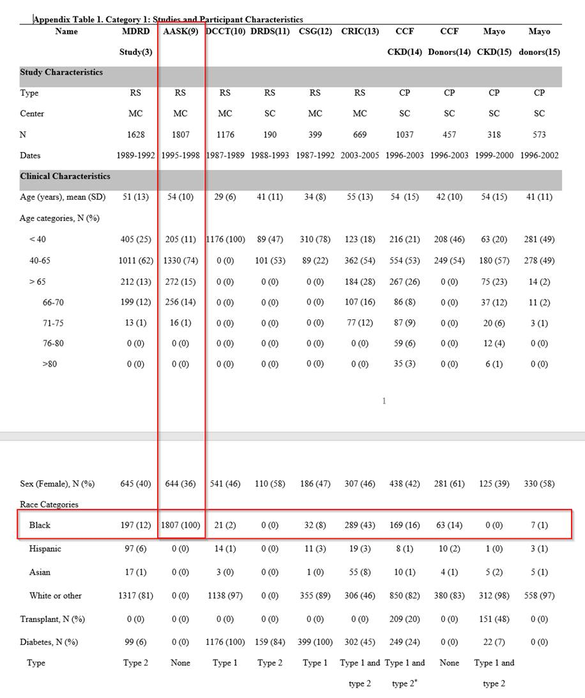
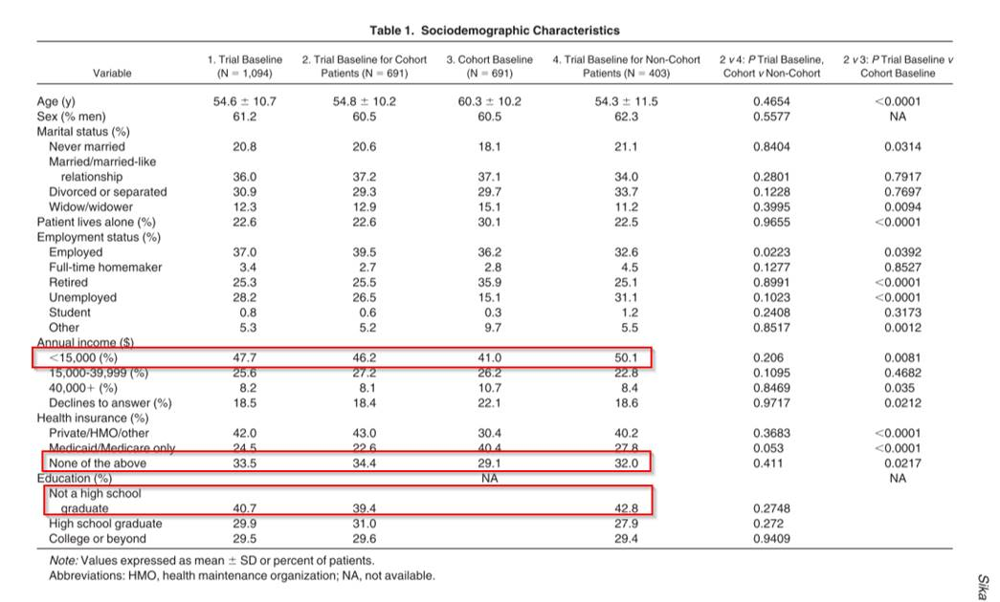
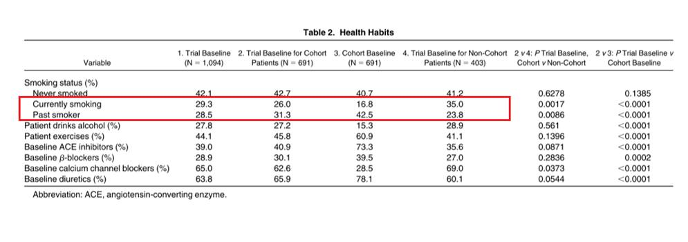
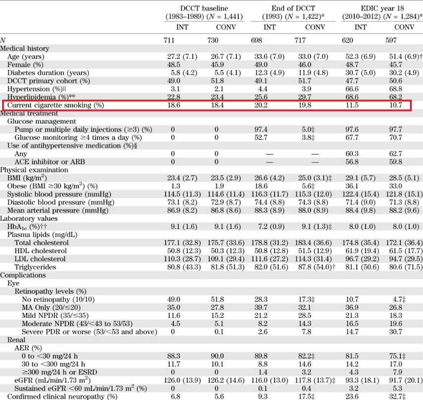
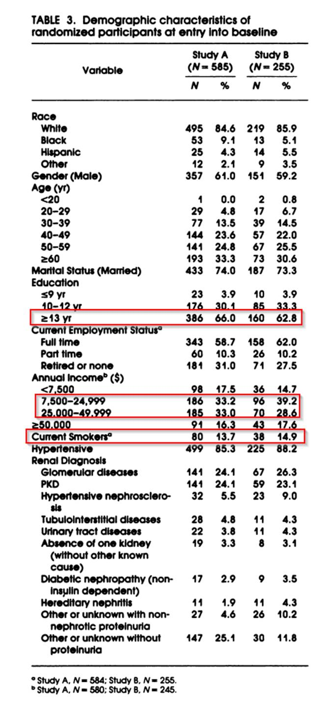
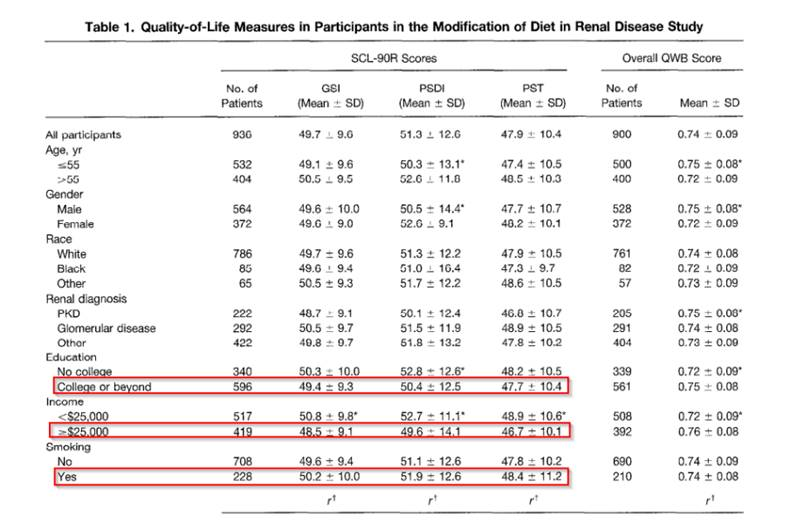
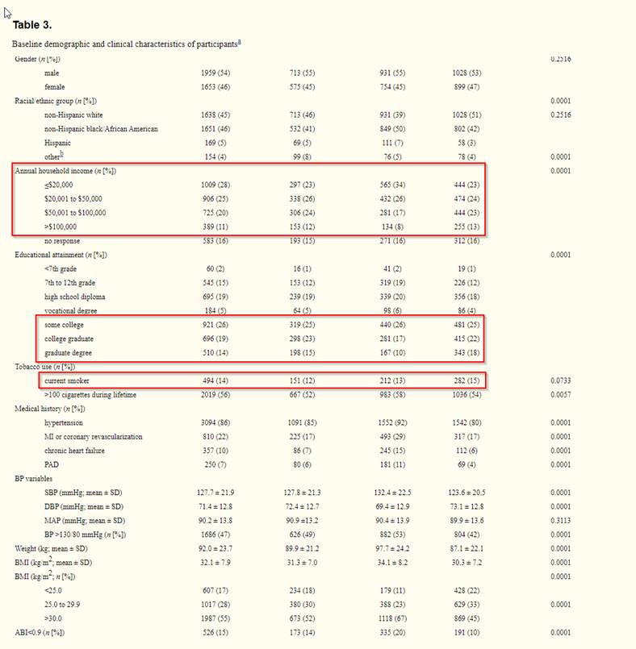
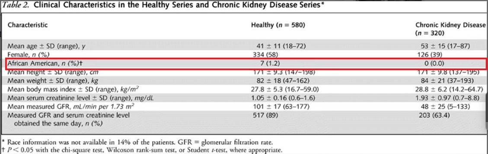
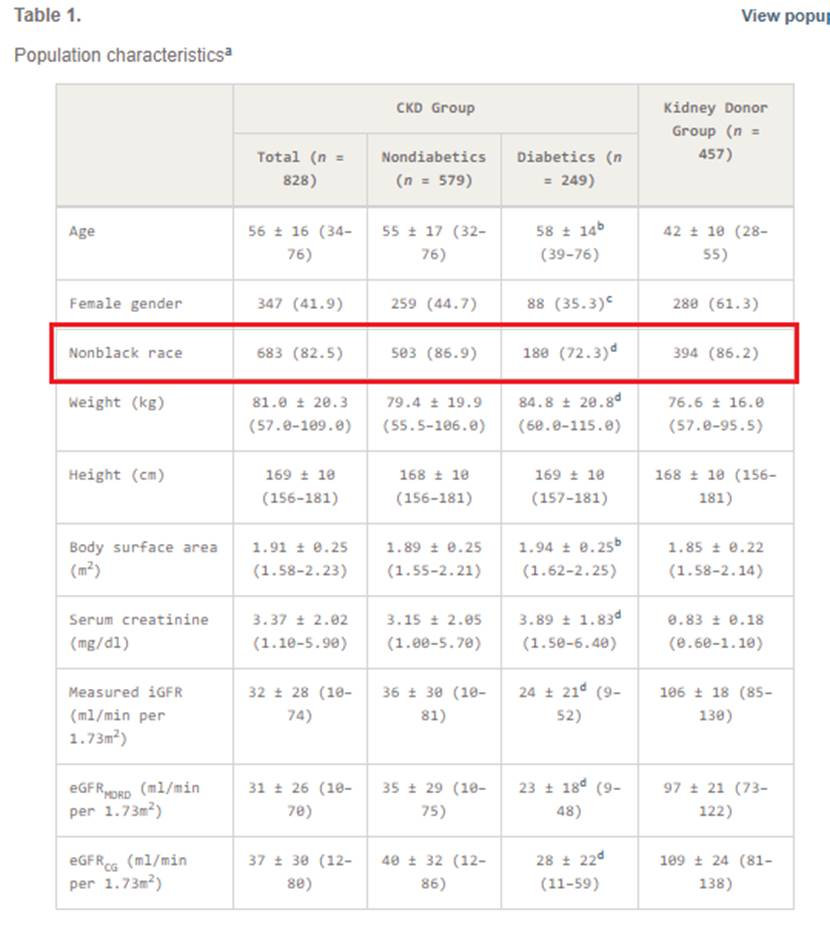

References:
CKD-EPI
https://pubmed.ncbi.nlm.nih.gov/19414839/
‘Category 1 studies:

Collaborators”:
http://ckdepi.org/collaborators/
Baseline characteristics of AASK trial
https://pubmed.ncbi.nlm.nih.gov/17591527/


DCCT https://www.ncbi.nlm.nih.gov/pmc/articles/PMC3837056/
29 Academic medical centers in 1980s.

MDRD
https://pubmed.ncbi.nlm.nih.gov/8305650/

https://pubmed.ncbi.nlm.nih.gov/9186075/

CRIC
https://pubmed.ncbi.nlm.nih.gov/19541818/

MAYO
https://pubmed.ncbi.nlm.nih.gov/15611490/

CCF (cleveland clinic foundation) Paggio/Hall
https://pubmed.ncbi.nlm.nih.gov/15615823/

https://www.ncbi.nlm.nih.gov/pmc/articles/PMC2713659/
DRDS
CSG
https://pubmed.ncbi.nlm.nih.gov/8413456/
https://jasn.asnjournals.org/content/3/4/S97.short
- No baseline characteristics on SES found